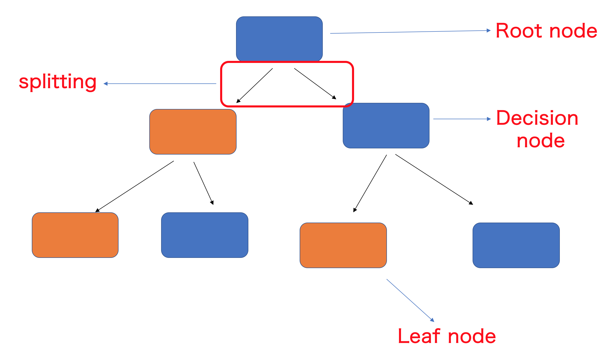
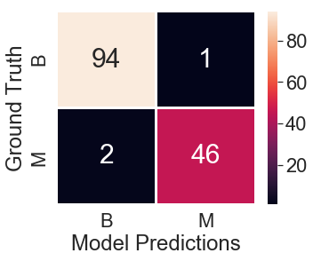
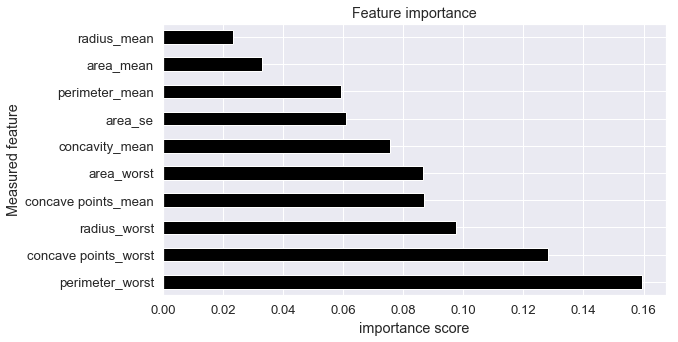
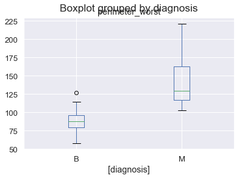
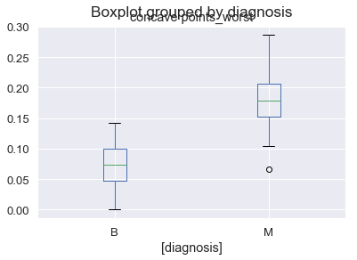

[Jupyter notebook for this project is available here]
I have been spending a lot of time understanding different concepts behind Machine learning techniques (ML), one concept at a time! In this post, I will discuss and try to simplify some of the concepts behind an ML technique, RandomForests. While there are many resources explaining in which areas this method is useful, I am not going to touch that. So, without much jibber-jabber, let’s get into ‘Forests’!
RandomForests?
RandomForests are a frequently used ML technique to predict either a continous outcome, e.g. house prices or a discrete outcome e.g. whether a disease is present in a tissue or not.
How does RandomForests work?
Before going into the details of how the method works, we need to familiarise with a couple of terms. Just imagine (or look below) a table with rows and columns

-
Features- a feature is a a type of measurement. It could be continuous e.g. in an examination of a tissue, it can be size, diameter etc or could be discrete e.g. the tissue is narrower or wider.Featuresare the most important details in building any ML model -
Instance- let’s say each row in above table is a patient. In a more technical way, these are calledInstacesorObservationsin ML language -
Each value in each cell is a measurement for a particular observation and feature
-
Entropy- from our school physics, we know this as ‘randomness’. So here it is randomness in the data. How can one quantify randomness in a given dataset?For the above table, entropy is calculated with the following formula
p- probability of being ‘Present’n- probability of being ‘Absent’Entropy = I(p,n) = -(p/(p+n)) * log2(p/(p+n)) - (n/(p+n)) * log2(n/(p+n)) = I(3,1) = -(3/(3+1)) * log2(3/(3+1)) - (1/(3+1)) * log2(1/(3+1)) = 0.811So the
entropyor the randomness in our dataset is0.811
And a few terms that are specific to RandomForests. The following figure is called a decision tree

-
Root node- Root node is a feature from which data splitting starts based on a binary decision and two branches emerge -
Decision node- Decision nodes are branches fromroot nodeat which binary decisions are made to split further -
Leaf node- Leaf node holds a final predicted outcome label. After a leaf node is generated, there will be no splitting of the data is possible. Leaf nodes are also called asTerminal nodes -
Splitting- Process of splitting the data into two sets depending on a binary decision
Now that we know a bit of alien terms, let’s talk about how RandomForests work. In the above example data, given four features, we would like to predict the outcome label.
Behind the scenes, RandomForests work by randomly choosing a feature and a value within that feature (making it a Root node) and splitting the data into two branches. One branch contains the feature values above the chosen value (TRUE) and the other branch contains feature values below the chosen value (FALSE), a binary decision. The random feature and random value are chosen in a way that the resulting two branches contains the entropy lower than the entropy of the Root node or the raw data. The process continues on each node generated from the root node until the final leaf nodes are generated or the final entropy becomes zero, meaning each observation is classified according to the given label.
For example, in the above table, we calculated that our initial entropy is 0.811. If we choose the feature Feature-1 and the value 5.4 and split the data into two branches, one that contains Feature-1 values <=5.4 [TRUE] other that contains Feature-1 values >5.4 [FALSE]. With this split, although one branch contains pure Present label, the other branch’s entropy is higher than the initial entropy, suggests the split is not ideal.

Instead, if we choose Feature-1 and value 0.5 as the splitting point, we will end up with 2 branches whose entropy is lower than the root node and contains a homogenous set of samples.
That is the basic idea behind a RandomForest. But the question is, is that all we need to get the results we want? or close to the results we want? Of course not. To get better results, we build many many trees as the one above and at the end, average of all trees is taken as the final results. Higher the number of trees, higher the accuracy of the final results. Of these many trees, each tree is ran with a random subsample of the original data or the random data of same size drawn from original data with replacement, which we call bootstraping in ML terminology. The final results are calculated in two different ways.
For example, we have two outcome labels YES and NO. If we ran 100 trees and an observation is classified as YES more frequently than NO, the final outcome for this observation will be YES, basically, the label with majority of votes wins. Instead, each tree can produce the probability for being YES and proability for being NO for each observation. At the end, all probabilities for being YES and NO are averaged for each observation and the final outcome will be the one with higest probability.
Now let’s look at a real world, complex cancer data and implement RandomForests to classify if a patient has Malignant (cancer tumor) or a Benign (non-cancer tumor).
Classification of Breast cancers with RandomForests
In order to implement RandomForests on Breast cancer data, I downloaded the data from kaggle. The data contains 569 patients/observations and 30 features and one more column with diagnosis either as label M for manlignant or B for benign, a classification problem. All features are various continuous measurements of breast tissue to classify the tumor type.
I will be using python and a famous machine learning library sklearn to implement RandomForest classifications.
Load required libraries
import pandas as pd
import numpy as np
import matplotlib.pyplot as plt
import seaborn as sns; sns.set(font_scale = 2)
from sklearn.ensemble import RandomForestClassifier
from sklearn.model_selection import train_test_split
Read data and clean
I downloaded data from above mentioned kaggle link. Here, we read the data into df_raw and remove unnecessary columns/features.
## read data
df_raw = pd.read_csv('data.csv', index_col = 'id')
df_raw.head().transpose()
.dataframe tbody tr th {
vertical-align: top;
}
.dataframe thead th {
text-align: right;
}
Remove Unnamed: 32 as it has only NaN values in it.
## id is patient ID
## remove 'Unnamed: 32'
df_raw = df_raw.drop('Unnamed: 32', axis=1)
Split the data into train and test sets
In order to build a model and validate it’s performance, we need to split the data into training and test set. After training the RandomForest model on training data, we’ll test it’s performance on test set. Here we split the 569 patients into 75% as training data and 25% as test data.
## split into training and test sets
train_df, test_df = train_test_split(df_raw, test_size=0.25)
len(train_df)
426
len(test_df)
143
test_df.head()
.dataframe tbody tr th {
vertical-align: top;
}
.dataframe thead th {
text-align: right;
}
test_df.diagnosis.value_counts()
B 95
M 48
Name: diagnosis, dtype: int64
train_df.diagnosis.value_counts()
B 262
M 164
Name: diagnosis, dtype: int64
df_raw.diagnosis.value_counts()
B 357
M 212
Name: diagnosis, dtype: int64
Binarize the outcome labels
As the computers do not understand Malignant or Benign, we need to convert them to 1 and 0 for M and B respectively.
## binarize 'diagnosis'
outcome_label = np.where(train_df['diagnosis'] == 'M', 1, 0)
outcome_label
array([1, 1, 0, 1, 0, 1, 0, 0, 0, 0, 0, 1, 1, 1, 0, 0, 0, 0, 0, 0, 1, 0,
0, 0, 1, 0, 1, 0, 1, 0, 1, 0, 0, 1, 1, 0, 0, 0, 1, 0, 1, 0, 0, 0,
0, 1, 1, 0, 1, 0, 0, 0, 0, 0, 0, 1, 0, 0, 1, 1, 0, 1, 0, 1, 0, 1,
0, 0, 1, 0, 1, 1, 0, 1, 1, 0, 1, 0, 0, 0, 0, 0, 1, 1, 1, 1, 0, 0,
0, 1, 1, 0, 0, 0, 0, 1, 1, 1, 1, 0, 0, 0, 1, 0, 0, 1, 1, 1, 0, 0,
1, 1, 1, 0, 0, 1, 0, 0, 0, 0, 0, 0, 0, 0, 0, 0, 0, 0, 1, 0, 0, 0,
0, 0, 0, 0, 0, 0, 1, 0, 0, 1, 1, 1, 0, 1, 0, 0, 1, 0, 0, 1, 0, 1,
0, 0, 1, 1, 0, 0, 1, 0, 1, 0, 0, 1, 0, 0, 0, 0, 1, 1, 1, 0, 1, 0,
0, 0, 0, 0, 0, 0, 0, 0, 0, 1, 1, 1, 0, 0, 1, 0, 1, 0, 1, 0, 0, 1,
1, 0, 1, 1, 0, 0, 1, 0, 0, 0, 0, 1, 1, 0, 1, 0, 1, 0, 1, 0, 0, 1,
0, 0, 0, 0, 0, 0, 1, 0, 0, 1, 1, 0, 0, 0, 0, 1, 0, 0, 0, 0, 0, 1,
1, 0, 0, 0, 0, 1, 1, 0, 0, 0, 0, 1, 1, 1, 1, 1, 1, 1, 1, 0, 1, 0,
1, 0, 0, 0, 0, 0, 1, 1, 0, 1, 0, 0, 1, 1, 0, 0, 1, 0, 0, 0, 1, 0,
0, 0, 0, 0, 1, 0, 0, 0, 0, 1, 0, 1, 0, 1, 1, 1, 0, 0, 1, 1, 1, 0,
0, 0, 1, 0, 1, 0, 1, 0, 0, 1, 0, 1, 1, 0, 0, 0, 0, 0, 0, 1, 0, 0,
0, 0, 0, 0, 1, 1, 1, 1, 1, 1, 0, 1, 0, 0, 0, 1, 0, 1, 1, 1, 0, 0,
0, 1, 1, 1, 1, 0, 0, 1, 1, 0, 1, 0, 0, 0, 1, 0, 1, 0, 0, 0, 0, 0,
0, 0, 1, 0, 0, 1, 1, 0, 1, 1, 1, 0, 0, 0, 0, 0, 1, 1, 1, 1, 0, 1,
0, 1, 1, 0, 0, 0, 0, 0, 0, 0, 0, 1, 0, 0, 1, 0, 1, 0, 1, 0, 0, 0,
0, 1, 0, 0, 0, 0, 0, 1])
train_df.head()
.dataframe tbody tr th {
vertical-align: top;
}
.dataframe thead th {
text-align: right;
}
Selecting Features
Here, I selected all the 30 features that were present in the data to train the model. While testing the performance of the model, we need to provide data for all the features used during training
## get features to be used = remove 'diagnosis' column
features = train_df.columns[1:]
features
Index(['radius_mean', 'texture_mean', 'perimeter_mean', 'area_mean',
'smoothness_mean', 'compactness_mean', 'concavity_mean',
'concave points_mean', 'symmetry_mean', 'fractal_dimension_mean',
'radius_se', 'texture_se', 'perimeter_se', 'area_se', 'smoothness_se',
'compactness_se', 'concavity_se', 'concave points_se', 'symmetry_se',
'fractal_dimension_se', 'radius_worst', 'texture_worst',
'perimeter_worst', 'area_worst', 'smoothness_worst',
'compactness_worst', 'concavity_worst', 'concave points_worst',
'symmetry_worst', 'fractal_dimension_worst'],
dtype='object')
RandomForestClassifier
Here, we implement RandomForestClassifier function imported from the sklearn.ensemble library above.
n_estimators- sklearn library calls trees as estimators. Here, I asked the function to run100trees and provide me the average of these 100 trees.
## implement RF
brca_clf = RandomForestClassifier(n_jobs=2, random_state=0, n_estimators=100)
brca_clf.fit(train_df[features], outcome_label)
RandomForestClassifier(bootstrap=True, class_weight=None, criterion='gini',
max_depth=None, max_features='auto', max_leaf_nodes=None,
min_impurity_decrease=0.0, min_impurity_split=None,
min_samples_leaf=1, min_samples_split=2,
min_weight_fraction_leaf=0.0, n_estimators=100, n_jobs=2,
oob_score=False, random_state=0, verbose=0, warm_start=False)
Implement the model on test data
Following command implements the RandomForestClassifier model we built above on test data set we saved for performance evaluation
brca_clf.predict(test_df[features])
array([0, 0, 0, 1, 0, 0, 1, 0, 1, 1, 0, 1, 1, 0, 1, 0, 0, 0, 1, 0, 0, 1,
0, 0, 0, 0, 1, 1, 0, 1, 1, 1, 0, 1, 0, 0, 0, 0, 0, 0, 0, 0, 0, 0,
0, 1, 0, 1, 0, 0, 0, 1, 1, 0, 0, 0, 1, 0, 1, 1, 0, 0, 1, 1, 0, 1,
0, 0, 1, 1, 0, 0, 0, 0, 0, 0, 0, 0, 0, 0, 0, 0, 0, 0, 1, 1, 0, 0,
1, 0, 0, 0, 0, 0, 1, 0, 0, 1, 1, 0, 0, 0, 0, 1, 1, 1, 0, 0, 0, 0,
0, 0, 0, 0, 0, 1, 0, 1, 0, 1, 0, 0, 0, 1, 0, 0, 1, 0, 1, 0, 1, 1,
0, 0, 0, 0, 0, 0, 0, 0, 1, 1, 1])
Map the M or B labels to binary outcomes
test_labels = test_df["diagnosis"].unique()
## map labels to ooutcomes from the model
test_predictions = test_labels[brca_clf.predict(test_df[features])]
test_predictions[0:10]
array(['B', 'B', 'B', 'M', 'B', 'B', 'M', 'B', 'M', 'M'], dtype=object)
Build a confusion matrix with Groud Truth and Model predictions
## ground truth from the test_df and predictions
conf_matrix = pd.crosstab(test_df["diagnosis"], test_predictions, rownames=["Ground Truth"], colnames=["Model Predictions"])
plt.figure(figsize = (5,4))
sns.heatmap(conf_matrix, annot=True, linecolor='white', linewidths=1.5, annot_kws={"size": 30})
<matplotlib.axes._subplots.AxesSubplot at 0x1a2b8ef6d8>

Accuracy
In our test data, there are 95 Benign and 48 Malignant labels out of 143 obsevrations. However, we misclassified 1 Benign case as Malignant and misclassified 2 Malignant cases as Benign cases. In total, there are 3 misclassifications and 140 correct predictions. Let’s look at the accuracy percentage
(140/143) * 100 = 97.90%
A whooping accuracy of ~98%. Looks like we built a reasonably very good model. Well done!
Feature importance
It is often of high interest to look at the features that were most important in predicting the labels. Meaning, shuffling the values of this feature will reduce the accuracy we are supposed to achieve. Feature importance can be calculated and visualized by following functions
## plot feature importance scores
feat_importances = pd.Series(brca_clf.feature_importances_, index=train_df.columns[1:])
feat_importances.head()
radius_mean 0.023095
texture_mean 0.019641
perimeter_mean 0.059293
area_mean 0.032830
smoothness_mean 0.007325
dtype: float64
plt.figure(figsize = (9,5))
feat_importances.nlargest(10).plot(kind='barh', color='black')
plt.title("Feature importance")
plt.ylabel("Measured feature")
plt.xlabel("importance score")
Text(0.5, 0, 'importance score')

Let’s briefly look at the important feature values in test data and how their values are distributed in Malignant and Benign tumors. Important feature value distribution must be high in one or the other class
## plot box plots for M and B for first 5 features
## see how much they differ
test_df.head()
.dataframe tbody tr th {
vertical-align: top;
}
.dataframe thead th {
text-align: right;
}
test_df[["diagnosis", "perimeter_worst"]].boxplot(by = "diagnosis")
<matplotlib.axes._subplots.AxesSubplot at 0x1a2a282b38>

test_df[["diagnosis", "concave points_worst"]].boxplot(by = "diagnosis")
<matplotlib.axes._subplots.AxesSubplot at 0x1a2a2c48d0>

Visualize decision trees
In this section, I visualize a decision tree and what’s happening at each binary decision point. As we ran 100 trees, I randomly chose tree number 25 to show splittings. The code to visualize the decision trees is from here.
## plot decision trees
from sklearn.tree import export_graphviz
train_labels = train_df["diagnosis"].unique()
## randomly chose tree-9 to plot
estimator = brca_clf.estimators_[25]
# Export as dot file
export_graphviz(estimator, out_file='tree.dot',
feature_names = features,
class_names = train_labels,
rounded = True, proportion = False,
precision = 2, filled = True)
# Convert to png using system command (requires Graphviz)
from subprocess import call
call(['dot', '-Tpng', 'tree.dot', '-o', 'tree.png', '-Gdpi=600'])
0
from IPython.display import Image
Image(filename = 'tree.png')

As one can see from the above decision tree, the first feature in tree number 25 is concave points_worst making it the root node and the splitting value <=0.14 producing two branches with lower entropy than the root node. Further, the two branch nodes are splitting again by selecting two different features for each branch. This process will be continued until entropy value is 0. After all 100 trees are built, the probabilities for being class M and B are averaged to give us the final class of each observation.
Here, with a basic model, we achieved an accuracy of 98% on a test data that the model has not seen before. By feature scaling, hyper-parameter tuning and further complex feature engineering, just imagine how well RandomForests can perform!